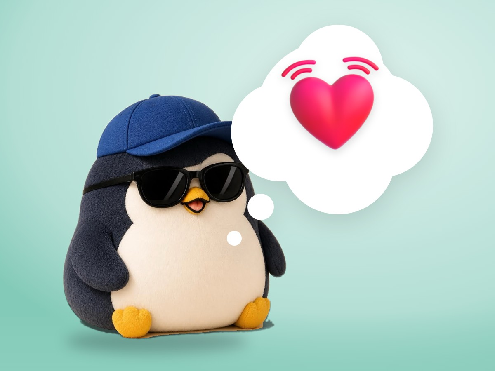

📝 DRAFT · 下書き — まだ本番に出していません · 下書き一覧
🐧 EVERYDAY LIFE⚡ 19 SEC
Before a feeling comes, your body reacts a little first 💓

Usual Idea
Usually we think, "Something happens, and then a feeling comes."
Body Signal
But it is said there is a small reaction in the body between them. For example, your chest feels uneasy, or your stomach feels heavy.
⚡ TRY IT
Catch it in the body
A small wave runs from the event to your feelings. Tap "Watch it" while it is in the body.
Press start. Something will happen.
🛒 Someone cuts in line at the store.
📱 Your message was read, but there is no reply.
☔ It starts to rain on laundry day.
⚡Event
💓Body
🌋Feeling
💓 My chest feels uneasy…
🪨 My stomach feels heavy…
🧱 My shoulders feel stiff…
Not too early, not too late. Just watch.
🍃 You watched it. It faded before it became a feeling.
🌋 Too late! It became a big feeling.
🙈 Too early. Nothing has reached your body yet.
🍃 Caught in the body: 0/ 3
🐧 When you notice the body first, the wave stays small.
Just Watch
If you watch it at that point, like "Oh, I felt uneasy just now," it seems to fade before it becomes a feeling.
📚 I wrote this from my notes on books and blogs I have read.